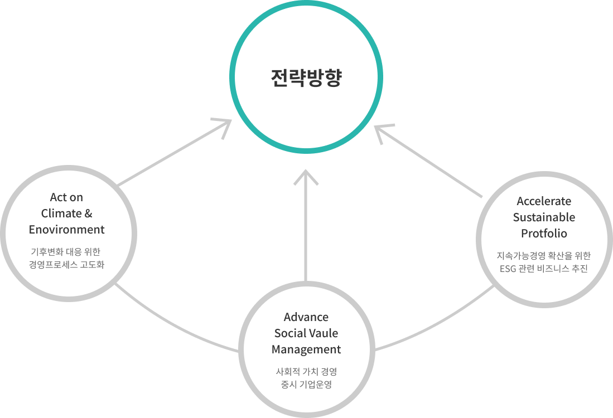
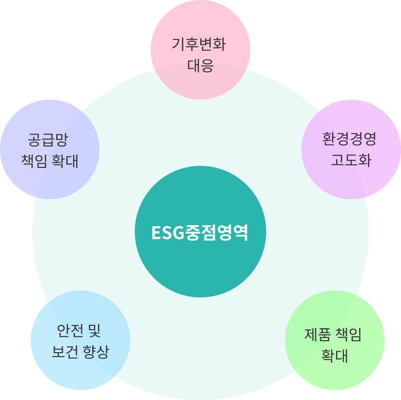

home > ESG경영 > 지속가능경영
지속가능경영
지속가능한 미래를 위해 ESG경영기반을 구축하고, 기후 환경 보전, 사회적 가치 경영과
구체적인 로드맵과 이행계획을 수립하여 이해관계자와 투명하게 소통하는 ESG경영을 실천해 나갈 것입니다.
ESG Vision
중점영역
ESG경영방침서
기본과 원칙에 충실하고, 기업윤리를 최우선으로 실천하여 최고를 넘어 그 이상의 가치를 실천합니다.
1.지속가능경영방침
- 구매 시 공급망의 환경, 안전, 노동/인권, 기업윤리 등 비재무적 가치에 대한 지속 가능성을 충분히 고려한다.
- 경제적 측면의 공급망 지속 가능성 및 경쟁력을 고려하고 안정적 공급망을 확보하기 위해 노력한다.
- 주요 협력사의 동반성장과 역량강화를 위해 교육 및 다양한 지원정책 프로그램을 제공한다
- 공급업체 및 협력사 선정 이후에도 환경/사회 관련 법규 위반, 체납 등에 대한 지표 모니터링을 통해 지속가능성과 관련한 리스크 발생 여부에 대해 지속적으로 관리한다